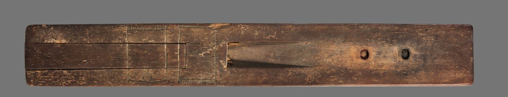

Ezekiel 9 — The Mister Translation

A scribe's palette, shown as an example of a writer's kit. It is Egyptian and older than Ezekiel, and it is not offered as the object in the vision.
Translator’s Notes
⭐ The loud voice. Chapter 8 ended with ‘though they cry in my ears with a loud voice, I will not hear them’. Here a loud voice cries in the prophet’s ears.
⚠ Bring near, or they have come. The first words, qarevu pequdot ha’ir, can be read as a command or as a statement, and pequddot can be those given charge of something, or a visitation, a punishment. The versions split: the ASV has “Cause ye them that have charge over the city to draw near”, the NIV “Bring near those who are appointed to execute judgment on the city”, the Douay “The visitations of the city are at hand” and the Geneva “The visitations of the city draw near”. This translation takes the command and keeps ‘those charged with the city’.
⭐ Instruments. Verse 1 has an instrument of destruction (mashchet), verse 2 an instrument of shattering (mappats); the two are kept apart. “Six men” stands in one verse of the Hebrew Bible, this one.
⚠ The man in linen. The text calls him a man, and does not say more. Whether he is one of the six or a seventh, ‘among them’ does not settle. Linen (bad, here in the plural) is what Aaron puts on for the Day of Atonement (Leviticus 16:4, now on these pages), and a man clothed in linen appears again in Daniel 12:6 (now on these pages). The word for the inkhorn, qeset, stands in three verses, all in this chapter. The NIV has “a writing kit at his side” and the NWT 1984 “a secretary’s inkhorn at his hips”. They stand by the bronze altar (1 Kings 8:64, now on these pages).
⭐ The glory moves. The glory seen in 8:4 goes up from the cherub to the threshold of the house (keruv). This is the first place in Ezekiel that uses the word. The Hebrew is singular; the NIV and the NWT 1984 have “cherubim” and “cherubs”, while the ASV keeps “the cherub, whereupon it was”. The verse says ‘he called’; verse 4 names Jehovah.
⭐ The mark. The Hebrew says vehitvita tav, ‘mark a mark’. Tav is also the name of the last letter of the alphabet; the note on 1 Samuel 21 speaks of the word. The Douay prints the letter’s name, “mark Thau upon the foreheads”; the ASV has “set a mark upon the foreheads”. The plural ‘foreheads’ stands in one verse, and the noun is the one used when the prophet’s own forehead was made strong (3:8–9).
⭐ Who is marked. Those who sigh and groan over the abominations done in the city. The first verb is the one Lamentations 1:4 and 21 print as ‘groan’; here ‘groan’ goes to the second verb. The mark does not stop what is done to others; it sets the mourners apart. Revelation 7:3 (now on these pages) has servants of God sealed on their foreheads, a picture this site’s note there connects with this one.
⭐ Pass through and strike. The others are to follow him, with no pity: ‘do not let your eye spare’, the words God had used of his own eye, now given to them. The page prints both the written and the read forms of two words here. ‘For destruction’ (lemashchit), as at 5:16, has the same root as the destroyer of the Passover night, when Jehovah passed through to strike Egypt and would not let the destroyer into the marked houses (Exodus 12:23; mashchit). There the sign was blood on doors, a different word; here it is a tav on foreheads.
⭐ The sanctuary first. “From my sanctuary you shall begin” stands in this one verse. Jeremiah 25:29 (now on these pages) begins disaster on the city called by Jehovah’s name, and 1 Peter 4:17 (now on these pages) says it is time for judgment to begin from the house of God.
⚠ The old men. They begin with the old men before the house, the same word zaqen as the ‘elders’ of 8:11. The verse does not say they are those seventy, nor the twenty-five of 8:16; the TLB does: “by killing the seventy elders”. The account of the fall of Jerusalem in 2 Chronicles 36:17 also names young man, virgin and old.
⭐ And I was left. The form vene’sha’ar, ‘and I was left’, stands in this one verse. He falls on his face, as he has before the glory, and cries ahah: ‘Ah, Lord Jehovah!’ (4:14; Joshua 7:7, both now on these pages).
⭐ All that remains. The noun is she’erit, what is left over, rendered as at 5:10. Ezekiel 11:13 asks almost the same question, and uses the word again. The ASV has “wilt thou destroy all the residue of Israel” and the NIV “the entire remnant of Israel”.
⭐ Very, very great. The doubled bim’od me’od stands in six verses of the Hebrew Bible, among them God’s promise to multiply Abram (Genesis 17:2, now on these pages). Here it measures iniquity. The land is ‘filled with blood’ as the earth was filled with violence before the flood (Genesis 6:11), and the city is full of mutteh, perversion. The KJV has “perverseness”, the ASV “wresting of judgment” and the NIV “injustice”.
⭐ Their saying again. The words of 8:12 return in the other order and without ‘us’. The Geneva and the NVI supply it.
⭐ And I too. God answers with the line of 8:18: my eye will not spare, and I will not have pity (chus). “Their way upon their head” stands in three verses of the Hebrew Bible, here and Ezekiel 11:21 and 22:31.
⭐ Done. The Hebrew text writes ‘as you commanded’ and reads ‘according to all that you commanded’; the page prints both and this translation follows the reading. The read words are those of the declaration made after the third-year tithe, “I have done according to all that you commanded me” (Deuteronomy 26:14, now on these pages). The verse does not say how many were marked. It ends with a paragraph break.
Patterns worth carrying forward
Where this translation keeps the exact / distinct words: “strike” at verses 5 and 7 and “striking” at 8; “destruction” for two related nouns, mashchet at verse 1 and mashchit at verse 6, with ‘destroying’ at verse 8 from the same root; “mark” at verses 4 and 6; “clothed in linen” and “at his waist” at verses 2, 3 and 11.
Echoes paid. The glory of chapter 8, its loud voice and its saying; and the marked houses of Exodus 12.
Echoes planted. The question of 11:13 and the way brought on their heads at 11:21.
Next in sequence: Ezekiel 10 — the man in linen is told to take coals of fire from between the cherubim and scatter them over the city.